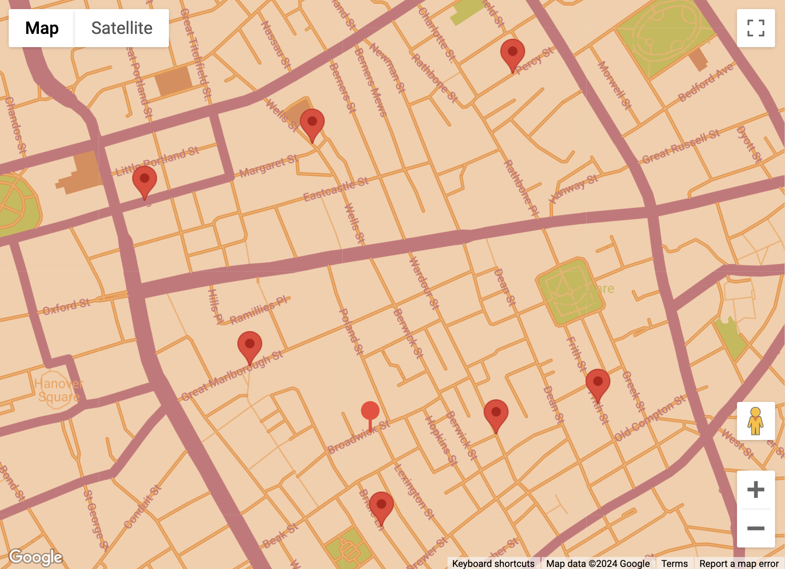

TRIZ for Problem Solvers
Methods and Process for Creative Thinking and Problem Solving
Inspiration
This is an extracted “kagga” from the famous Mankutimmmana Kagga by D V Gundappa. (Quoted to me in 1989 at Horanadu, by late friend B.S.Nagesh Rao, Digital Systems Division, ISRO Satellite Centre)
hosa chiguru haLE bEru kUDiralu mara sogasu|
hosa yukti haLe tatva-doDagUDe dharma||
RuShivaakyadoDane vij~jaanakale mELavise|
jasavu janajIvanake - maMkutimma || 522 ||
Introduction
Creative Problem Solving is a Process and can be taught and learnt. Brainstorming is utter BS. Post-Its are a great Invention, but a complete waste of time.
This is a (very opinionated) Contextual Enquiry Course on Creative Problem Solving , designed for the Foundation (freshman) year of a Bachelor’s Degree in Art and Design, at the Srishti Manipal Institute of Art, Design, and Technology, Bangalore, India.
Abstract
This Unit takes students on a journey of understanding the process of Personal Creativity and Structured Innovation.
We begin by using the idea of Flow, as a pathway between ever-increasing (creative) Complexity and Boredom as defined by Csikszentmihalyi. Childhood Games will be examined to understand the aspects of Play and linked to and the idea of “Infinite Games” by James Carse and how Rule-Breaking in Play is an important step in enhancing personal creativity.
Bourdieu’s concept of Cultural Capital will be interpreted as one of the primary sources for an individual’s ideas, along with Csikzentmihalyi’s idea of the Creative Domain, Field and the Creative Individual. Tools for enhancing Cultural Capital will be introduced. The MBTI / Big 5 Tool will be used to understanding ourselves, our abilities, strengths, traits and differences from others.
Structured heuristic techniques based on de Bono’s 6 Hat method will help us see how to perform Situational Analysis and Idea Generation, to help us take ideas from conception to execution. Reference will be made to Alex Osborn’s “Applied Imagination” methods and tied to the Big 5 results.
Aspects of the Systematic Russian Process of innovation and problem solving, TRIZ (Teoriya Resheniya Izobretatelskhikh Zadatch) invented by Genrikh Altshuller will be introduced. Alshuller’s idea of Generalized Problem Solving by borrowing ideas/memes from other Domains, his 8 Laws of Evolution of Products, and ( a few of ) the 40 Inventive Principles derived from his analysis of patents, will be covered in gamified fashion. These will be linked to with David Perkin’s (Harvard Project Zero) ideas and Edward de Bono’s methods to interpret, and design for, existing situations and products.
Advanced aspects of TRIZ such as Su-Field Analysis, the Laws of Product Evolution, and ARIZ will be introduced in gamefied fashion.
Field visits to product, food preparation, solar energy, and logistics companies will be used to bolster and demonstrate the unity of these concepts acquired in class. Technological assignments, and non-tech making and presenting tasks will also be used in class to create gamefied experiences for all of these.
The students will finally use the methods and ideas they have learnt and apply them in creating a project, artifact or performance of their own.
Course Contents
The course will have some basic foundations from psychological and cognitive science foundations, on top of which will be built the edifice of Big Understandings, Dispostions, and Skills.
- Fundamentals of Flow and Play as defined by Mihaly Csikszentmihalyi
- Thinking Styles and how one appreciates the Problem Situation
- Cultural Capital as a source of one’s Ideas
- Genes and Memes
- Cognitive Biases and Functional Fixedness
- Cultivating a Mentality of Resource(fulness)
- Metaphors as Gateways
- The Six Thinking Hats Method and how to apply them in practice
- Innovative Problems Solving Methods like TRIZ , its philosophy, and techniques such as the TRIZ Contradiction Matrix and 40 Inventive Principles
- Advanced TRIZ methods such as Substance-Field Analysis , 76 Scientific Principles , and the Laws of Product Evolution
- Analysis of Hollywood Movies for manifestations of metaphoric problems and TRIZ methods
- Bring your own Problem: A Final Culminating Problem-Solving Project
Why all this “Structure” to a course on Creativity?
Isn’t Empathy Mapping-Brainstorming-Ideation-Iteration the core of the Design process? What is this new(?)-fangled structured TRIZ process thing?
Let us see some short extracts from Herbert Simon’s landmark book, Sciences of the Artificial: (emphasis everywhere in the following is mine)
Chapter 5: The Science of Design: Creating the Artificial Historically and traditionally, it has been the task of the science disciplines to teach about natural things: how they are and how they work. It has been the task of engineering schools to teach about artificial things: how to make artifacts that have desired properties and how to design.
Engineers are not the only professional designers. Everyone designs who devises courses of action aimed at changing existing situations into preferred ones. The intellectual activity that produces material artifacts is no different fundamentally from the one that prescribes remedies for a sick patient or the one that devises a new sales plan for a company or a social welfare policy for a state. Design, so construed, is the core of all professional training; it is the principal mark that distinguishes the professions from the sciences. Schools of engineering, as well as schools of architecture, business, education, law, and medicine, are all centrally concerned with the process of design.
In view of the key role of design in professional activity, it is ironic that in this century the natural sciences almost drove the sciences of the artificial from professional school curricula, a development that peaked about two or three decades after the Second World War. Engineering schools gradually became schools of physics and mathematics; medical school became schools of biological science; business schools became schools of finite mathematics.
Such a universal phenomenon must have had a basic cause. It did have a very obvious one. As professional schools, including the independent engineering schools, were more and more absorbed into the general cul- ture of the university, they hankered after academic respectability.
In terms of the prevailing norms, academic respectability calls for subject matter that is intellectually tough, analytic, formalizable, and teachable.
In the past much, if not most, of what we knew about design and about the artificial sciences was intellectually soft, intuitive, informal, and cookbooky.
Yeah. That’s why this course exists. To make Design tough, analytic, formalizable, and teachable learnable.
References
- Herbert A. Simon. (1988). The Science of Design: Creating the Artificial. Design Issues, Vol. 4, No. 1/2, Designing the Immaterial Society (1988), pp. 67-82.Stable URL: http://www.jstor.org/stable/1511391
- Prekshaa.(December 2019) The Making of Mankutimmana Kagga. https://www.prekshaa.in/article/making-mankutimmana-kagga
Course Materials and Modules
| Title | Reading Time | |
|---|---|---|
|
|
🦸 The Company of Heroes | 5 min |
| 🕹 How Must I Play? | 7 min | |

|
🕹 Still More Games !! | 7 min |
| 🍅 Biases, Memes, Viral Trends, and Rumours! | 5 min | |
|  | 🕹 Proximity - Painting Soho red with Kandinsky! | 5 min |
| 🕹 Measuring and Playing with Proximity | 13 min | |
| 🕹 A Random Walk with Hamlet | 7 min | |

|
🕹 Eating Mangoes with Hamlet | 36 min |

|
Throwing Stones with Hamlet | 2 min |
| 🕹 I am Insta Famous | 6 min | |
| 🌵 Fractals | 1 min | |
|
|
🌲 Algorithmic Trees, L-Systems and Kolams | 2 min |

|
🕸 Wired for Sound | 6 min |

|
🕹 Symmetry | 1 min |

|
🎶 Resources and Notes to Myself | 27 min |
| 🕹 The Road Not Taken | 1 min |


{kind=link}
{kind=link}